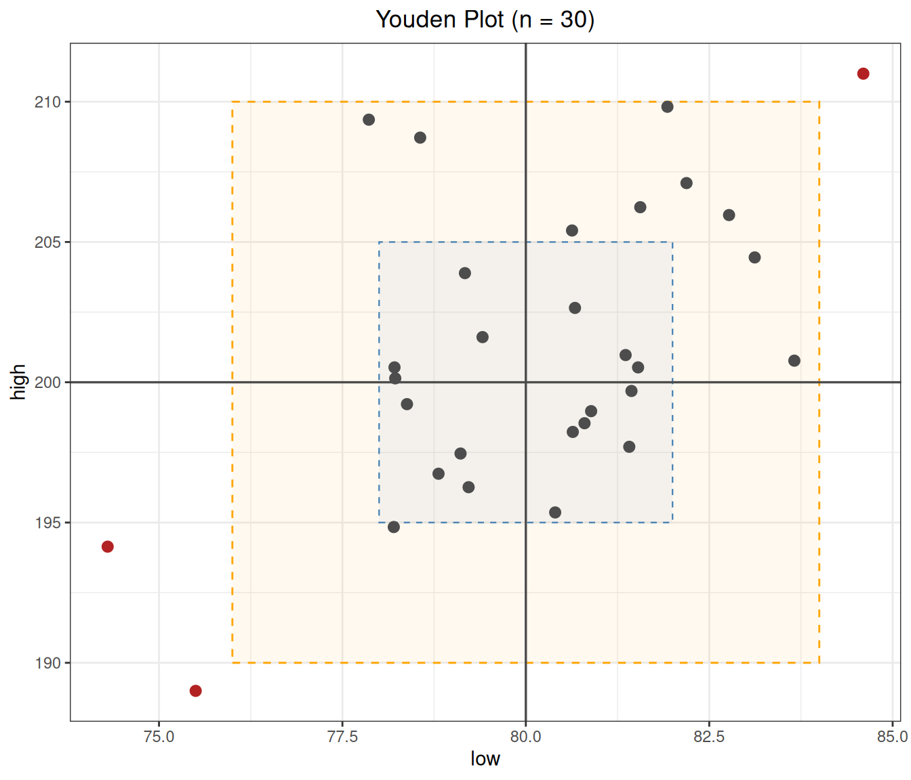

代码
library(ivdtools)
library(readr)质量控制（quality control，QC）通过定期测定质控品并监控结果是否偏离靶值，判断测量系统是否处于 受控状态。ivdtools 提供 Levey–Jennings 图与 Westgard 多规则评价（qc_chart()）、换批/换组情境 下的分组监控，以及双水平质控的 Youden 图（youden_plot()）。
本文演示：获取与理解 Westgard 规则、日常质控结果是否超限、试剂换批时如何正确分组评价，以及双 水平质控的 Youden 图。示例数据为确定性的教学数据；Westgard 规则组合与允许限应根据实验室的风险 管理策略和方案预先确定。
library(ivdtools)
library(readr)| 函数 | 主要用途 | 关键输入或输出 |
|---|---|---|
list_westgard() |
查看 Westgard 规则名称与含义 | brief=TRUE 仅返回规则向量 |
qc_chart() |
Levey–Jennings 图 + 规则判定 | rules、mean/sd、group、run |
youden_plot() |
双水平质控 Youden 图 | 两个样本列、靶值均值/SD |
list_westgard()
Westgard QC Rules
--------------------------------------------------
1-2s 1 point exceeds +/-2s (warning)
1-3s 1 point exceeds +/-3s (out of control)
2-2s 2 consecutive points exceed +/-2s (same side)
R-4s 2 consecutive points differ by at least 4s
4-1s 4 consecutive points exceed +/-1s (same side)
8x 8 consecutive points on same side of mean
10x 10 consecutive points on same side of mean
-------------------------------------------------- qc_daily <- read_csv("./data/qc-daily.csv", show_col_types = FALSE)
qc_daily <- as.data.frame(qc_daily)
head(qc_daily)数据为目标值 mean = 100、SD = 3 的日常质控结果，共 30 个运行点。
qc <- qc_chart(
qc_daily,
value = "value",
rules = "1-2s,1-3s,2-2s,R-4s,4-1s,10x",
mean = 100,
sd = 3,
run = "run"
)
print(qc)
QC Control Chart
Value column: value
Mean (target): 100.0000
SD (target): 3.0000
N (total): 30 | Complete: 30 | Missing: 0
Rules applied: 1-2s, 1-3s, 2-2s, R-4s, 4-1s, 10x
Violations:
--------------------------------------------------
1-2s : points 15, 23
1-3s : points 15
-> 2 violation(s): 1 warning(s), 1 out of controlplot(qc)qc_chart() 把每条规则的违例点记录在 $violations 中：
qc$violations$`1-2s`
[1] 15 23
$`1-3s`
[1] 15
$`2-2s`
integer(0)
$`R-4s`
integer(0)
$`4-1s`
integer(0)
$`10x`
integer(0)本例第 15 点超出 +3s（触发 1-3s 与 1-2s，判为失控），第 23 点超出 −2s（触发 1-2s，判为 警告）。n_warn 与 n_oc 分别给出警告与失控点计数。
参数说明：
qc_chart()的rules为逗号分隔的规则字符串；mean/sd为目标值（不给出时用 数据估计，但监控质控应使用来自说明书的靶值）。run指定运行顺序列，group指定分组列（见示例二）。
数据中前 10 个点为 L1 批、中间 10 个为 L2 批（存在整体偏移）、后 10 个为 L3 批：
qc_lot <- read_csv("./data/qc-lot-change.csv", show_col_types = FALSE)
qc_lot <- as.data.frame(qc_lot)
table(qc_lot$lot)
L1 L2 L3
10 10 10 用 group = "lot" 画图，Westgard 规则仍在整条序列上判定：
qc_lot_all <- qc_chart(
qc_lot,
value = "value",
mean = 100,
sd = 3,
run = "run",
group = "lot"
)
qc_lot_all$n_oc[1] 0plot(qc_lot_all)图中虽按批分面，但规则在整条序列上计算，观察换批造成的系统性偏移。
Youden 图使用两个不同浓度（水平）的质控品在同一次运行中的结果（宽表格式，一列一个水平）：
youden_dat <- read_csv("./data/qc-youden.csv", show_col_types = FALSE)
youden_dat <- as.data.frame(youden_dat)
head(youden_dat)yd <- youden_plot(
youden_dat,
sample1 = "low",
sample2 = "high",
mean1 = 80,
mean2 = 200,
sd1 = 2,
sd2 = 5
)
print(yd)
Youden Plot
Sample 1 (low):
Mean: 80.0000
SD: 2.0000
Sample 2 (high):
Mean: 200.0000
SD: 5.0000
Correlation: 0.5428
N (total): 30 | Complete: 30 | Missing: 0
Points outside +/-2SD: 3 (rows: 3, 17, 19)plot(yd)
yd$outside_rows[1] 3 17 19youden_plot() 用 ±2s 矩形框标注超出范围的点。本示例有 3 个运行点落在矩形外（含人为设置的 失控点），提示这些运行可能同时受到系统误差影响。两水平的共享偏移（点沿对角线方向外移）提示 系统误差，单一方向的大幅度偏移则更可能来自随机误差或单水平问题。
参数说明：
youden_plot()的sample1/sample2为两个水平的数值列；mean1/mean2/sd1/sd2为靶值（不给出时用数据估计）。$n_outside与$outside_rows给出矩形外的点。